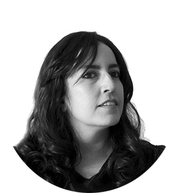

Maryam Fardinfard (born in Iran, 1984) began her artistic journey with portrait and anatomy painting before turning her focus to landscape, still life, and wildlife. Working first in colored pencil, gouache, and ink, she now develops her hyperrealist style through colored pencil, oil, and pastels.
Largely self-taught — with only two private teachers for a short period in her birthplace, Isfahan — she holds a BS in Physical Education and a Master’s degree in Movement Corrective and Sports Pathology.
She is currently based in Dubai, working on a new private painting collection alongside client commissions. She is a Signature Member of the Society of Animal Artists (USA) and Artists for Conservation (Canada).
I use pastel and colored pencils to draw what moves me most — the deep connection between people, animals, and nature.
My style is based on hyperrealism, but I’m not just trying to copy what I see. I try to show what’s underneath — the feeling in a lion’s eyes, the freedom of a bird in flight, the calm beauty of autumn, or a quiet moment between two people.
I hope my work makes people feel something — strength, love, or just a sense of wonder — and reminds others to slow down and notice the small things we often miss. To me, art is a way to connect: a quiet conversation between what we see and what we feel.